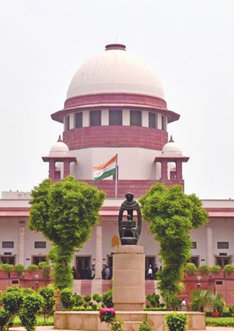
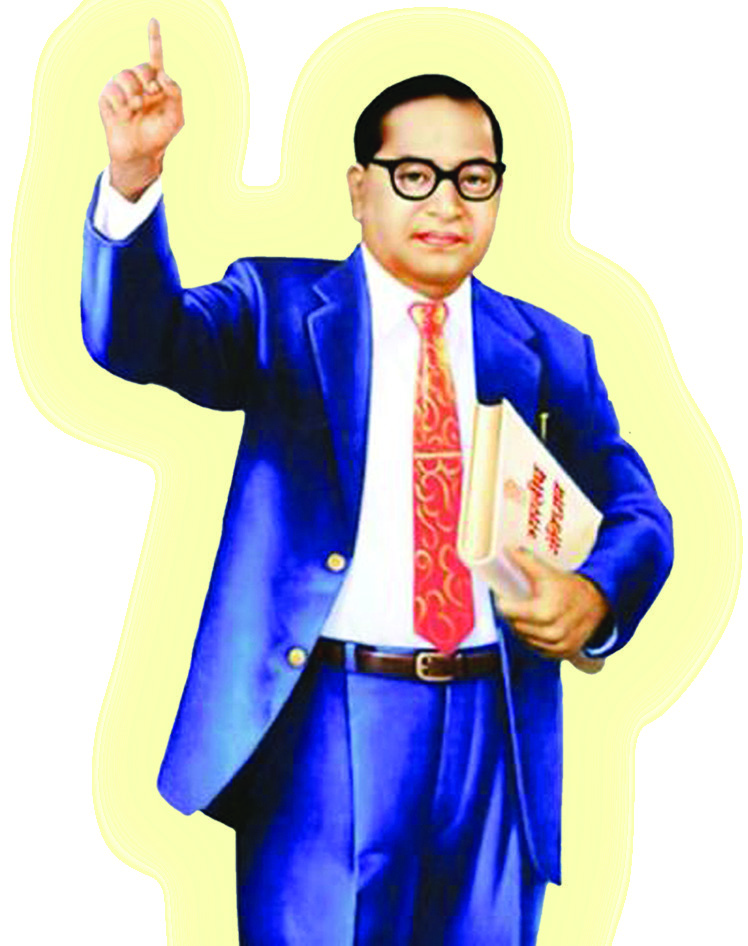
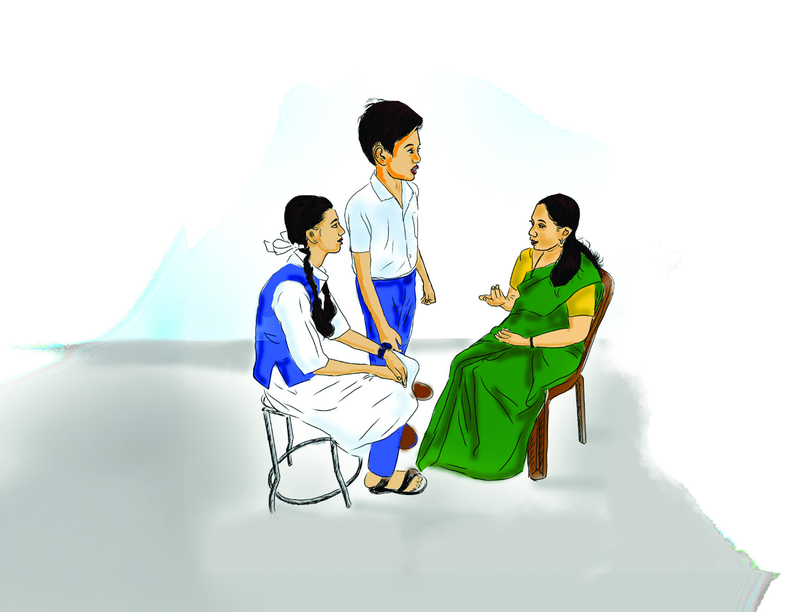
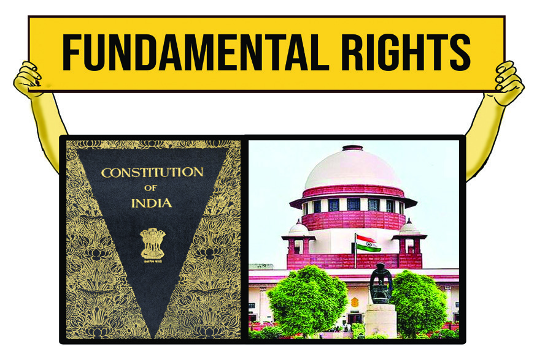
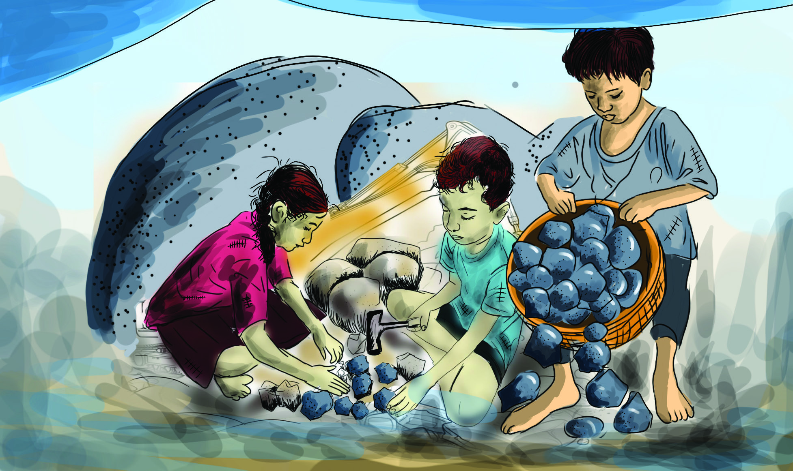
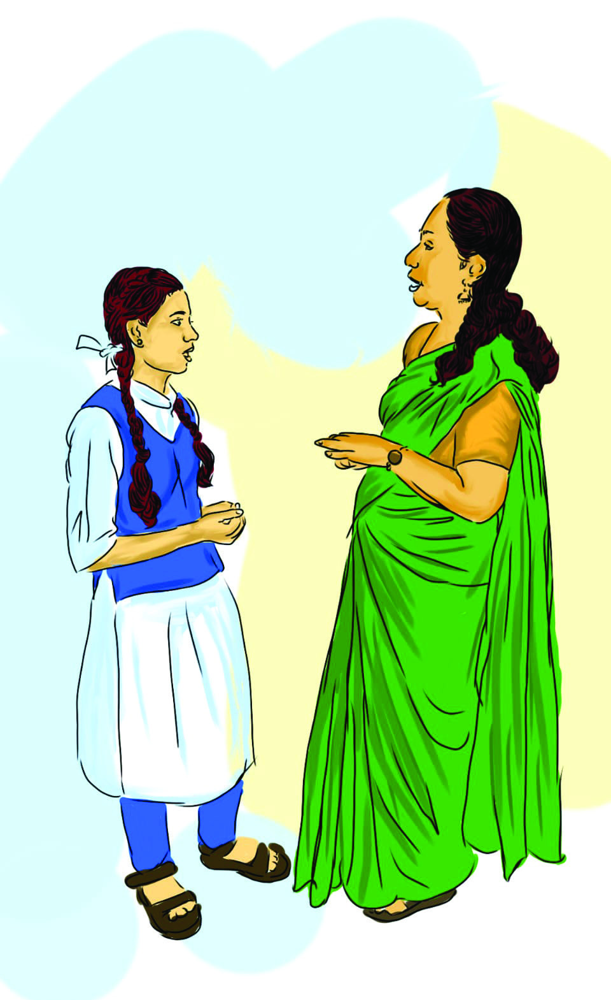
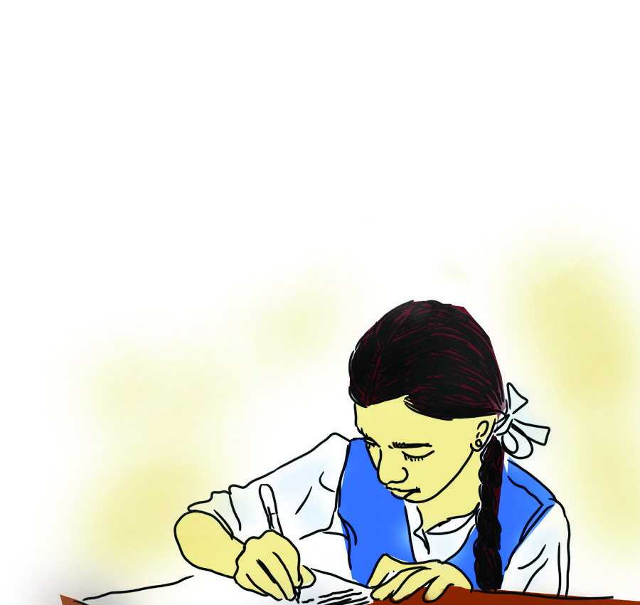
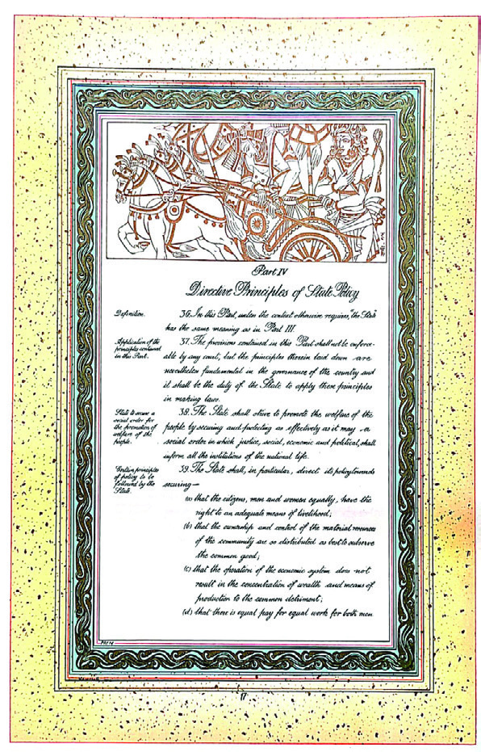
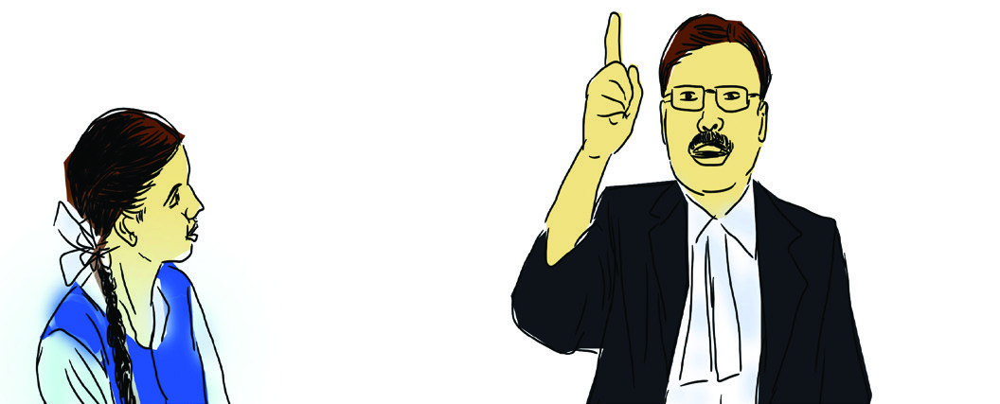
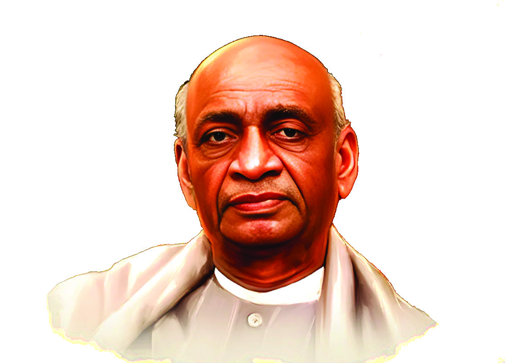

Constitution
of India: Rights
and Duties
5
Unit
lFig. 5.1
Without equality, liberty would produce the
supremacy of the few over the many.
Equality without liberty would kill individual
initiative. Without fraternity, liberty and equality
could not become a natural course of things.
Dr. B. R. Ambedkar
(Constituent Assembly,
November 25, 1949)
Given here is a selected part of the speech delivered by the constitutional architect,
Dr. B. R. Ambedkar in the Constituent Assembly on November 25, 1949. The
importance of equality, freedom and fraternity is clear from these words.
Page 73


Page 74


Yes,
all these are
constitutionally
granted rights
to everyone by
the state.
The Constituent Assembly came into
existence on December 6, 1946.
Dr. Rajendra Prasad was the
Chairman of the House and India’s
first prime minister Jawaharlal
Nehru was the Chairman of the three
main sub-committees. The assembly
had three hundred and eighty-nine
members at the time of formation
and was reconstituted with two
hundred ninety-nine members after
independence in 1947.
Constituent Assembly
Teacher, it was said in
the seminar that we
have freedom to
express our opinions.
Isn’t it our right?
lFig. 5.2
lFig. 5.3
lFig. 5.4
In the preamble of Indian Constitution, it is
declared that justice, liberty, equality and
fraternity shall be protected for all citizens.
These are enshrined in the Constitution as
fundamental rights and guiding principles
of state policy. Along with that, the basic
duties of the citizens towards the nation
and society are also mentioned in the
Constitution. This lesson discusses the
rights, guidelines and duties enshrined in
the Constitution of India.
Rights
After attending a seminar on the
importance of rights, the children make
a discussion with the teacher. Listen to it.
What are the rights mentioned in the
conversation?
l
l
Apart from these what are the other
rights you want?
l
l
It was said
in the seminar that we
also have the right to
be protected from
exploitation.
74
Social Science
Standard
Page 75


Rights are those that are accepted by society in terms
of claims made and recognised and enforced by the
state through law. It is the responsibility of democratic
systems to ensure that individuals have rights. These
should be implemented by the government through law.
A list is included in the Constitution of most democratic
states for that purpose. This list of rights places certain
limitations on the government when it comes to interfere
with the rights of individuals. In addition, it also ensures
redressal in case of violation of rights.
Fundamental Rights
There
are
certain
fundamental
rights
that
are
internationally recognised as human rights and that are
essential to the dignity, liberty and survival of citizens
in a democratic system. Fundamental rights are such
rights recognised, protected and enforced by states. In
the constitutions of various countries in the world, some
important rights have been included as fundamental
rights based on specific conditions of each country. Some
important events in human history led to the concept of
fundamental rights. Look at the flowchart given below.
Human
Rights
Magna Carta
As human beings,
everyone in the world
has the right to live
a dignified and equal
life without any
discrimination on the
basis of caste, religion,
race, colour, region,
language or gender.
Human rights are the
rights that protect the
dignity and
individuality of
human beings
universally.
The Magna Carta is the earliest
written document of rights in Britain.
The term ‘Magna Carta’ means ‘big
document.’ It is an official document
declaring that the king and his
government are not above the law.
In 1215, the people forced King John,
the then ruler of England, to sign this
document. It later became the basis
for the British Parliament’s powers
and legal principles. England’s
Petition of Rights and Bill of Rights
were shaped by the influence of
Magna Carta.
Timeline of
Fundamental Rights
Magna Carta - 1215
The first official document
in the world to refer to
civil rights and liberties.
75
Constitution of India:
Rights and Duties
Page 76



Declaration of Human Rights after
the French Revolution
(Declaration of the Rights of Man and
of the Citizen - 1789)
Bill of Rights defining human rights that
influenced the nations of the world.
United States
Bill of Rights - 1789
Bill of Rights mentioned in the
world’s first written constitution.
Rights are mentioned in the
Bill of Rights included in the US
Constitution. The US Constitution
guarantees citizens the right to
religious belief, the right to
freedom of speech, the right to
freedom of press, the right to
assemble peacefully, and the right
to security of life and property.
The Declaration of the
Rights of Man is a bill
of rights promulgated
by the National
Assembly of France in
1789. This document
declares the individual
and collective rights
of all citizens. This
declaration states that
citizens are born free
and equal in rights and
that social distinctions
are established only on
the basis of the common
good.
United States Bill of Rights
The Declaration
of the Rights of
Man and of the
Citizen
United Nations’ Universal
Declaration of Human Rights
(Universal Declaration of Human
Rights-1948)
Bill of Rights issued by the United
Nations for implementation by
all member states.
The above mentioned lines on rights have played
a crucial role in the formation of the concept of
fundamental rights. These have influenced the
inclusion of fundamental rights in the Constitutions
of many democratic countries. Our Constitution also
enshrines certain rights as fundamental rights.
Fundamental Rights in Indian Constitution
lFig. 5.5
76
Social Science
Standard
Page 77


There are several factors that influenced the framers of
the Constitution to include Fundamental Rights in the
Constitution of India. The main factor is the denial of rights
that the Indian people had to suffer during the British rule.
The values upheld by the freedom struggle and the ideas
of the Indian Renaissance Movement are other factors that
influenced the fundamental rights in the Constitution. The
rights mentioned in the constitutions of other countries and
the Bills of Rights which are the precursors of fundamental
rights have influenced the fundamental rights in our
Constitution.
What were the factors that influenced the
inclusion of Fundamental Rights in the
Constitution of India? Complete the list.
l denial of rights experienced during
colonial rule
l existing conditions in the world
l
Constitution Day
November 26
is observed as
Constitution Day
in India. This day
is observed to
commemorate the
adoption of the
Constitution of India
by the Constituent
Assembly on 26
November 1949.
Fundamental rights are enshrined in Part III of the
Constitution of India. Common laws usually protect
and enforce statutory rights. But it is the Constitution
that protects and ensures the fundamental rights.
Let us check what fundamental rights are guaranteed
by the Constitution.
Right to Equality
The right to equality is the right to ensure equality
before the law and equal protection of the law for all
in our country. According to this right, there is no
discrimination on the basis of religion, class, caste,
sex or place of birth. It also guarantees equal access to hotels, shops, wells, ponds,
bathing ghats and public roads. This right ensures equality of opportunity in public
jobs, prohibits untouchability and abolishes titles.
77
Constitution of India:
Rights and Duties
Page 78


Have you noticed any violations of the right to equality enshrined in the
Constitution of India? Write down what they are.
l
l
Which right does the above picture indicate?
Freedom to assemble peacefully
Freedom to practise any profession
or to carry on any occupation,
trade or business
Freedom to form associations
Freedom to move freely
through out the territory of India
Freedom of speech and expression
Freedom to reside and settle in any
part of the territory of India
lFig. 5.7
Right to Freedom
The aspiration of the Indian people, who had to live
under foreign rule for a long time, is reflected in the
fundamental right of the right to freedom. Articles 19 to 22
of the Constitution explain the rights to freedom and the
reasonable restrictions on them. The rights and freedom
mentioned in Article 19 are as follows.
Apart from these,
rights such as right
to education, right
to life and individual
freedom are enshrined
in Articles 20 to 22.
These are subject to
reasonable restrictions
in the context of
national integrity,
sovereignty and
security.
78
Social Science
Standard
Page 79



Organise a panel discussion on ‘Freedom Guaranteed by the
Constitution in Personal Life.’
One of the
exploitations
against children
is given in the
picture.What
other exploits
have you noticed?
Note down.
l
l
lFig. 5.8
lFig. 5.9
Right against Exploitation
There was a social situation in our country where many
sections of people were kept away from the mainstream
and exploited. The Constitution of India, through the right
against exploitation, ensures a secured life by eliminating
exploitations like slavery, human trafficking, forced labour
and child labour. Article 23 of the Constitution prohibits
all forms of forced labour and human trafficking, declaring
them illegal. According to Article 24, employing children
under the age of 14 in mines, factories or other hazardous
workplaces is prohibited.
Right to Education Act-2009
Education was declared a fundamental right under
Article 21A by the 86th Constitutional Amendment
Act in 2002. In 2009, Parliament passed the Right
to Education Act. The Act came into effect in April
2010. This Act ensures free, compulsory and quality
education for all children between the age group of
six and fourteen.
79
Constitution of India:
Rights and Duties
Page 80



Right to Freedom of Religion
The Constitution allows everyone in India the freedom to
profess, practise and propagate any acceptable religion.
This right includes the freedom to act according to their
conscience. The right to freedom of religion guarantees
equal treatment and equal protection to all religions. But
the aforesaid right shall be subject to the restrictions of
public norms, health and morality.
Organise a discussion and prepare a note on the topic ‘Religious
Freedom Strengthens Indian Secularism.’
What are the minority groups in our state? Enquire and write.
l linguistic minorities
l
l
l
Is it because
of cultural and
educational right
that we get
free education?
No, free education
is part of the right to
freedom. Cultural
and educational
rights pertain to
minorities.
lFig. 5.10
Cultural and
Educational Rights
India is a country rich in diversity. Religious,
linguistic and cultural minorities characterise
this diversity. Minorities are groups of people
who follow a common language, religion or
culture and are fewer in number than other
groups in a particular part of the country or
the whole country. Cultural and educational
rights are the means for minorities to preserve
and develop their culture, language and script.
Accordingly, all religious, linguistic and cultural
minorities have the right to establish and run
their own educational institutions. Through
that they can protect and nurture their own
culture.
80
Social Science
Standard
Page 81


Fundamental
Rights
Right to Equality
(Articles 14 to 18)
Right to Freedom
of Religion
(Articles 25 to 28)
Right to Liberty
(Articles 19 to 22)
Right against
Exploitation
(Articles 23 and 24)
Right to
Constitutional
Remedies
(Article 32)
Cultural and
Educational Rights
(Articles 29 to 30)
lFig. 5.11
Why is it said that the right to
constitutional remedies is the most
important of the fundamental
rights?
l
l
Right to Constitutional
Remedies
The right to constitutional remedies is
one of the greatest protections given to
the safety and security of the individual.
If any of the above fundamental rights
is violated, the Supreme Court under
Article 32 and the High Courts under
Article 226 can be approached for
their restoration. The Supreme Court
and High Courts restore fundamental
rights through writs. Writs are orders
and directions issued by the Supreme
Court or the High Courts for the
protection of fundamental rights.
Dr. B. R. Ambedkar describes this right
as the heart and soul of the Indian
Constitution.
81
Constitution of India:
Rights and Duties
Page 82



Habeas Corpus: A court order that requires the custodian of an unlawfully
detained person to bring the person before the court.
Mandamus: An order issued when a court finds that an officer’s failure to
perform his statutory duty has prejudiced the rights of another person.
Prohibition: An order of the Supreme Court or High Court prohibiting lower
courts from hearing a case outside their jurisdiction.
Quo Warranto: An order issued by a court restraining an officer from holding
a position for which he is not entitled.
Certiorari: An order to transfer a case pending in a lower court to the higher
court.
Organise a discussion and prepare a report on the topic ‘Role of
fundamental rights in the dignified life of man.’
Various types of Writs.
Part IV of the Constitution –
manuscript
lFig. 5.12
Directive Principles of State Policy
Socio-economic justice has equal importance along
with rights and freedoms. Ideas for achieving these are
included in the directive principles of state policy. Its aim
is to establish a welfare state by ensuring the welfare and
progress of all sections of the people. Unlike fundamental
rights, these are not enforceable with the support of the
courts. At the same time, governments need to give
due consideration to these directive principles while
formulating policies and programmes. Articles 36 to 51 of
Part IV of the Constitution contain directive principles.
These are the recommendations that governments
should follow in administration and legislation. The
directive principles contain broad concepts that touch
on all economic, social, educational, and international
82
Social Science
Standard
Page 83

issues of the nation. The directive principles of state policy
can be classified into three categories, namely, liberal ideas,
socialist ideas and Gandhian ideas.
Liberal
Ideas
Socialist
Ideas
Gandhian
Ideas
l Promote
international peace
and security
l Uniform
Civil Code for
citizens
l Equal justice
and free legal aid
l Provision of care
and education for
children under six
years of age
l Environment,
livestock and wildlife
conservation
l Wage for livelihood
for workers
l Equal pay for equal
work for men and
women
l Participation of
workers in the
management of
industries
l Right to
employment
l Ensure regular and
humane working
conditions and
maternity benefits
l Organise Gram
Panchayats
l Fostering cottage
industries
l Agriculture and
animal husbandry
l Prohibition of
consumption of
intoxicating drinks
and drugs injurious
to health
l Uplift of Scheduled
Castes and
Scheduled Tribes
and other weaker
sections
What aspects of social life do the directive principles of state policy
touch upon? List them.
l socio-economic justice
l
l people’s welfare
l
Fundamental Rights and Directive
Principles: Differences
Fundamental rights enshrined in the Constitution of India and
directive principles of the state policy are complementary.
Fundamental rights limit the powers of the government
while directives compel the government to do certain things.
Fundamental rights mainly protect the rights of individuals.
83
Constitution of India:
Rights and Duties
Page 84



But directive principles ensure the welfare
of all sections of the society. One can
approach the Supreme Court or High Court
when fundamental rights are violated. It
is not possible to approach the court if the
directive principles are violated. Amendment
of fundamental rights requires complex
procedures. Procedures for amending the
directive principles are relatively simple and
can be implemented through legislation.
In the process of democracy, fundamental
rights implement political democracy while
guiding principles realise socio-economic
democracy.
No. We can
approach the Supreme
Court directly when
fundamental rights
like free education
are violated.
Fundamental rights
Directive principles
l it can be reinstated through
the courts
l cannot go to court for enforcement
l
l
l
l
l
l
Identify and write the differences between fundamental rights and
directive principles.
The directives aimed at social
and economic justice are
included in the Constitution as
guidelines of the state policy.
Many of these recommendations
are implemented through
legislation as required from time
to time. The Gandhian idea of
organising village panchayats
has been implemented through
the Panchayati Raj-Nagarpalika
Acts of 1993. The liberal idea
of free education has been
implemented through the Right
to Education Act, 2009. The
Environment Protection Act of
1986 is also a reflection of the
liberal idea. The Equal Pay Act of
1976 was enacted to implement
the socialist concept of equal
pay for equal work for men and
women.
Directive Principles –
in Practice
If the directive
principle of free
legal aid is not
implemented,
can one directly
approach the
Supreme Court
against it?
lFig. 5.13
84
Social Science
Standard
Page 85


Fundamental Duties
“Every Indian must remember that he is an
Indian and he has every right in his country but
with certain duties"
-Sardar Vallabhbhai Patel
Why does the
Constitution
stipulate that
Indian citizens
have to perform
certain duties?
The Constitution
states that citizens
have to perform
certain duties to
protect the unity
and integrity of
the nation.
lFig. 5.14
lFig. 5.15
Did you pay attention to the words of Sardar Vallabhbhai
Patel who was the first Deputy Prime Minister and Home
Minister of India? He suggested that Indian citizens
should have regular responsibilities along with rights.
Rights and duties are two sides of the same coin. Our
Constitution enshrines certain duties that citizens have
to fulfill.
The Sardar Swaran Singh Committee was appointed
by the Central Government in 1976 to submit
recommendations on the fundamental duties of citizens.
Taking into consideration the recommendations of the
Committee, a new Part (IVA) containing the Fundamental
Duties was included in the Constitution as part of the
42nd Constitutional Amendment in 1976. Accordingly,
the Fundamental Duties became part of the Constitution
as Article 51A.
Obeying the Constitution as a citizen, protecting the
country, performing national service when the country
calls for it, and protecting the environment are among
the ideas included in the fundamental duties. These
are the duties that every citizen has to fulfill towards
the nation and the society. There are eleven duties
embedded in the constitution as fundamental duties.
Some of these are moral and some are civic in nature.
Its basic principle is that when citizens enjoy their
fundamental rights, they should also be aware of their
fundamental duties.
85
Constitution of India:
Rights and Duties
Page 86


Some of the Fundamental Duties mentioned in the Indian Constitution
are given below. Find out from the last part of the textbook what other
duties Indian citizens have to perform according to the Constitution
and discuss and make a note.
l obey the Constitution and respect its ideals, institutions,
national flag and national anthem
l nurture and pursue the noble ideals that inspired our national
struggle for freedom
l
l
Our Constitution guarantees the essential rights of
individuals as fundamental rights to a dignified life. It also
puts forward the directive principles of state policy for social
welfare. Fundamental duties for the integrity and survival of
the nation have also been mentioned in the Constitution. In
this way, the Constitution acts as a code of rights and duties.
Extended Activities
l Organise an interview with experts in law on ‘The Role of Courts in Protecting
Fundamental Rights.’
l ‘To enjoy fundamental rights in its full sense, fundamental duties need to be
properly performed.’ Organise a panel discussion on this topic.
l Collect newspaper articles on fundamental rights, directive principles and
fundamental duties and prepare a digital album.
86
Social Science
Standard